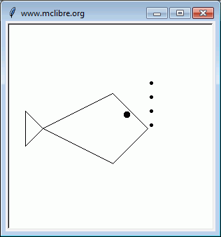
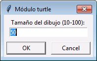
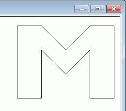
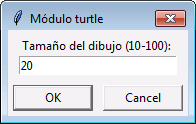
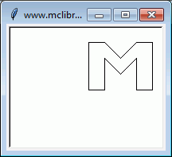
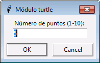
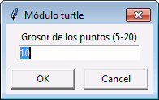
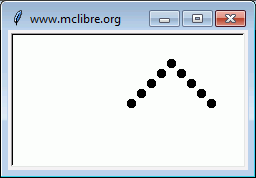
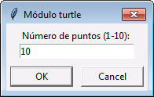
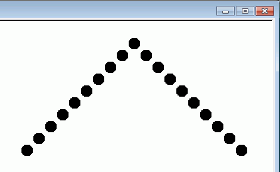

Escriba un programa conversor de centímetros a kens y shakus, unidades japonesas de longitud.
Se recuerda que un ken son seis shakus y que un shaku equivale a 30,3 cm.
Si se pone un número no positivo, el programa debe dar un aviso de error. Escriba el resultado de shakus con dos decimales.
CONVERTIDOR DE CENTÍMETROS A KENS Y SHAKUS Escriba la cantidad de centímetros: -5 Por favor, escriba un número positivo
CONVERTIDOR DE CENTÍMETROS A KENS Y SHAKUS Escriba la cantidad de centímetros: 100 100 cm son 3.3 shakus, es decir 0 ken(s) y 3.3 shaku(s)
CONVERTIDOR DE CENTÍMETROS A KENS Y SHAKUS Escriba la cantidad de centímetros: 2000 2000 cm son 66.01 shakus, es decir 11 ken(s) y 0.01 shaku(s)
CONVERTIDOR DE CENTÍMETROS A KENS Y SHAKUS Escriba la cantidad de centímetros: 9876 9876 cm son 325.94 shakus, es decir 54 ken(s) y 1.94 shaku(s)
Escriba un programa que pida dos números
PARES O IMPARES Escriba un número entero: 10 Escriba otro número entero mayor que 10: 30 [12, 14, 16, 18, 20, 22, 24, 26, 28]
PARES O IMPARES Escriba un número entero: 9 Escriba otro número entero mayor que 10: 20 [11, 13, 15, 17, 19]
Escriba un programa que pida una lista de palabras y a continuación un número y que devuelva dos listas de palabras, la lista de palabras con un número de letras menor del indicado y la lista de palabras más largas.
PALABRAS CORTAS Y LARGAS Escriba una palabra: gato Escriba una palabra: perro Escriba una palabra: ratón Escriba una palabra: elefante Escriba una palabra: Las palabras que ha escrito son: ['gato', 'perro', 'ratón', 'elefante'] Escriba un número entero: 5 Las palabras de menos de 5 letras son: ['gato'] Las palabras de 5 o más letras son: ['perro', 'ratón', 'elefante']
Escriba un programa que genere el siguiente dibujo. El ancho de la cabeza del pez es 50 px.

Escriba un programa que genere el siguiente dibujo. La ventana debe ajustarse automáticamente al tamaño solicitado por el usuario. El dibujo de la letra está en el primer cuadrante.
 
 
Escriba un programa que genere el siguiente dibujo. La ventana debe ajustarse automáticamente al tamaño solicitado por el usuario. El dibujo está en el primer cuadrante.
  
 